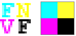
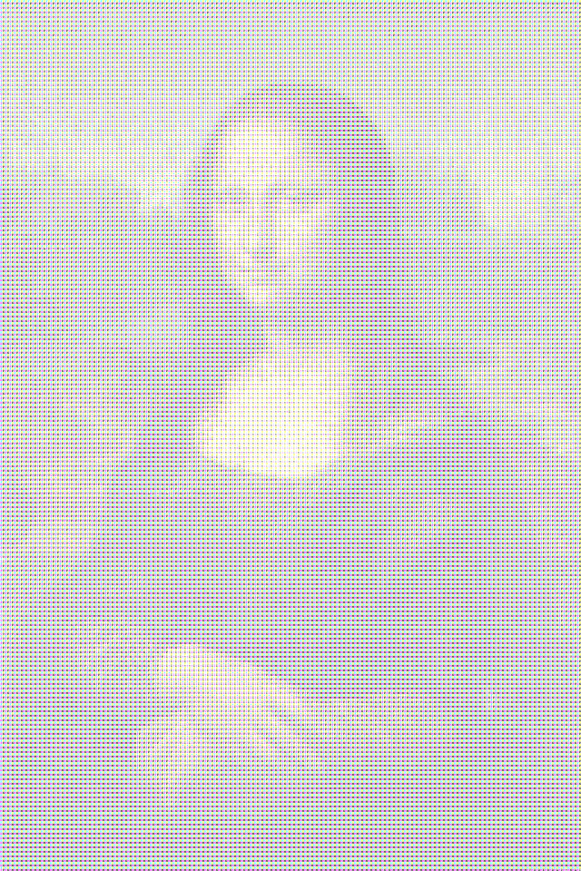
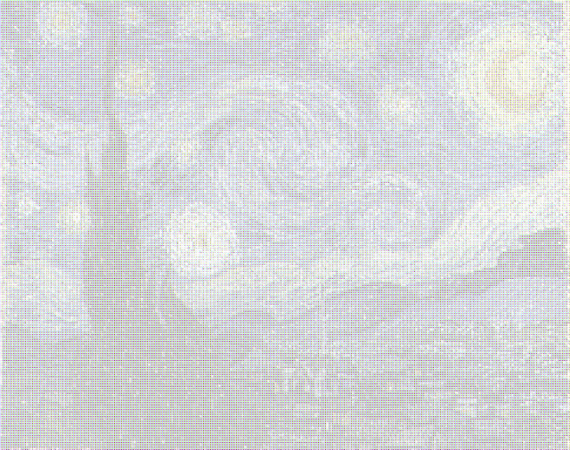
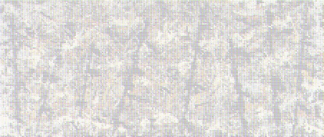

Color ASCII Art

I've been intrigued for a while by the idea of making a color version of ASCII art.
The only color ASCII art I could find online
used 24-bit color characters,
but that's really cheating. Given enough colors we could draw the whole picture using different colored copies of the letter M,
but where's the challenge in that?
24-bit Color ASCII Art (2011)
What is color ASCII art anyway?
An internet search will find quite a few examples
of 24-bit color ASCII art, meaning that each character can
be drawn in any of the 16,777,216 available 24-bit colors.
For example, on the left we have some 24-bit ASCII art.
On the right we have something more like what I have in mind,
but we're getting ahead of ourselves.
Here are some more examples of 24-bit color ASCII art. Click for a larger image.
But if we allow 24-bit color characters, we could just
use the letter M drawn in different colors,
which strikes me as being lame.
Here's an example that you can click on for a larger image,
which you can zoom in on using your browser to see
all the Ms.
In greyscale ASCII art we choose the character whose average darkness matches the darkness of the pixel that it represents.
In color ASCII art we should use high-intensity colors and choose the character whose average darkness matches the intensity of the color of the pixel
that it represents.
Ideally each character should be drawn
using only a small set of saturated colors so that the images could in principle be created on an old-school
typewriter with only a few colored ribbons.
It turns out that we can get away with three or four ribbons.
We'll start with four-color ASCII art because it looks better on the screen,
and finish with three-color ASCII art which often looks better when printed.
The principle is still the same in both cases: color separation.
Color Separation (2011)
We start by separating the image pixel sampled by our shader into its red, green, and blue components.
Imagine them arranged in a two by two quad like the one below at left, with the fourth entry filled by the pixels's grayscale value.
We could get by without the grayscale pixel in a pinch, but the ASCII images would look much paler, and we have an empty
slot in the quad so we might as well use it.
For example, here's the ladybug image separated into RGB quads. It looks very much like what you'd see on a TV if you look close enough.
Here's some pixel shader code for building the quads:
float4 ColorSeparate (in float2 Tex: TEXCOORD0): COLOR0{
const int CHARSIZE = 8; //pixels in character block
const int TEXTURESIZE = 2048; //size of texture
const int TEXTURESIZE2 = 512; //size of texture for characters
const int BLOCKSCALE = TEXTURESIZE/CHARSIZE;
const int BLOCKSCALE2 = BLOCKSCALE/2;
float2 blocky = floor(BLOCKSCALE*Tex)/BLOCKSCALE;
float2 blocky2 = floor(BLOCKSCALE2*Tex)/BLOCKSCALE2;
float4 pix = tex2D(Sampler0, blocky2); //grab pixel
[flatten]if(blocky.x == blocky2.x){
[flatten]if(blocky.y == blocky2.y)
pix.g = pix.b = 0.0f;
else pix.r = pix.b = 0.0f;
}
else if(blocky.y == blocky2.y)
pix.g = pix.r = 0.0f;
else pix.rgb = (pix.r + pix.g + pix.b)/3.0f;
return pix;
}
Color Theory Strikes Back (2011)
Since color theory and I are only passing acquaintances,
my first attempt was to replace each of the four color blocks in a quad with a colored character that represents its intensity,
for example, strong red would be a red M and midtone red would be a red *.
Unfortunately the results were not what I was expecting. Click on the following
picture and zoom in using your browser to see the red, green, and blue ASCII characters:
All is not lost, however.
It looks like the red on the ladybug is cyan and the green on the grass is magenta.
This is a pretty good clue that the perceived colors are inverted from the actual colors.
This is easily fixed by inverting the characters' colors from RGB to CMY.
So in fact we'd need
cyan, magenta, and yellow ribbons for our old-school mechanical typewriter in addition to our standard black:

Here's some pixel shader code for turning quads into colored characters:
float4 SeparatedToText(in float2 Tex: TEXCOORD0): COLOR0{
const int CHARSIZE = 8;
const int GRAYLEVELS = 9;
const int TEXTURESIZE = 2048;
const int TEXTURESIZE2 = 512;
const int BLOCKSCALE = TEXTURESIZE/CHARSIZE;
float4 pix = tex2D(Sampler0,
(floor(TEXTURESIZE*Tex)/CHARSIZE)*CHARSIZE/TEXTURESIZE);
int gray = max(max(pix.r, pix.g), pix.b)*GRAYLEVELS;
pix.rgb = 1.0f - ceil(pix.rgb);
int2 inttex, block;
inttex = floor(Tex * (TEXTURESIZE-1));
block = (inttex/CHARSIZE)*CHARSIZE;
float2 offset = inttex - block + 1;
offset.x += gray*CHARSIZE;
offset /= TEXTURESIZE2 - 1;
float4 color = tex2D(Sampler1, offset);
color = clamp(color+4.0*pix,0,1);
return color;
}
Notice that following line of code about halfway down:
pix.rgb = 1.0f - ceil(pix.rgb);
is where we invert the colors from RGB to CMY (the "1.0f -" part, and make them full saturation (the ceil part).
The result is an image made up of cyan, magenta, and yellow,
and black characters drawn at full saturation.
Four-Color ASCII Art (2011)
Here's an example of a peacock
zoomed in at two levels to show the ASCII characters.
Here are some more examples of
256 character wide,
colored ASCII images.
Click on the thumbnails to get a larger image where you can see the colored characters more clearly by zooming in using your browser.
A color ASCII image of the author:
A color ASCII image of a red-winged blackbird from the Wikipedia ASCII Art page:
A propaganda picture of the University of North Texas as a color ASCII image:
The same picture at double the resolution (512 characters wide):
The beach picture from above at 512 characters wide.
Click on this and the remainder of the images on this page to see a larger version
that you can zoom in on with your browser to see the color ASCII characters:
A colorful garden in Cape May, NJ at 512 characters wide:
The obvious downsides to this method of generating color ASCII art are that the colors are less vibrant than the original,
and the resolution is halved (because we need four characters per
pixel instead of one).
Fine Art (2011)
The following are some color ASCII art images of around
500-ish characters wide, made from some fine art images available on the web.

"La Gioconda",
Leonardo da Vinci, completed circa 1503-1519.


Three-Color ASCII Art (2011)
Here's what happens if we use three colors per pixel instead of four.
It's a fairly simple matter to modify our pixel shader for color separation so that
each pixel of the image is represented by a row of three characters, one cyan, one magenta, and one yellow.
By varying the order of the three colors based on row number, we can
have stripes of color vertically, diagonally, or back-diagonally as shown below. It makes little or no difference when the
picture is viewed from a distance, for example, you can tell that the middle butterfly below is different from the others,
but it is almost impossible to tell the left image from the right one.
Click on the butterfly images for a larger version.
Notice that they are paler but brighter than the four
color per pixel version we saw above.
Here are some more examples in three colors on the left and four colors on the right.
It seems to me that the four color version (right) looks better on the screen but the three color version (left) looks better
when printed.
Three-Color ASCII Art with Embedded Texture (2012)
Three-color ASCII Art gives you the option of rearranging the order of the CMY triples to give an embedded
texture that is only visible at middle distances. The texture disappears when viewed from long distances.
Once again, click on the images for a larger version.

Sex Object
Created October 19, 2011.
Last updated August 7, 2019.


{kind=link}
{kind=link}
{kind=link}
{kind=link}
{kind=link}
{kind=link}
{kind=link}
{kind=link}
{kind=link}
{kind=link}
{kind=link}
{kind=link}
{kind=link}
{kind=link}
{kind=link}
{kind=link}
{kind=link}
{kind=link}
{kind=link}
{kind=link}
{kind=link}
{kind=link}
{kind=link}
{kind=link}
{kind=link}
{kind=link}
{kind=link}
{kind=link}
{kind=link}
{kind=link}
{kind=link}
{kind=link}
{kind=link}
{kind=link}
{kind=link}
{kind=link}